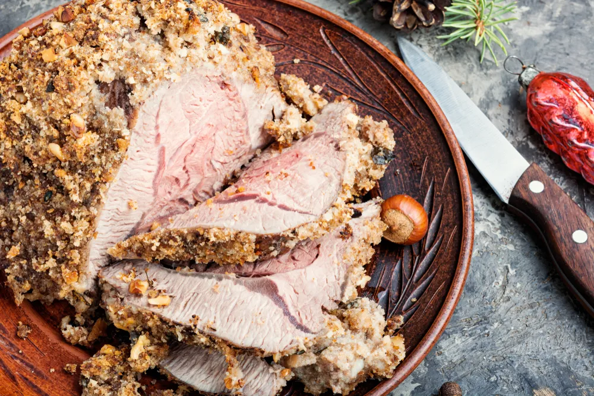

Diabetes-Friendly Christmas Recipes

Christmas – it’s a time for cheer and gifting, and it’s also a time for temptation, especially when it comes to food. While it’s likely not too big of a deal for the average person, for people with diabetes, they already have to closely monitor what they eat so they don’t cause any unnecessary grief. So navigating all the feasts and treats at Christmas can be tricky!
However, just because you’re diabetic doesn’t mean you can’t enjoy the rich, delicious dishes that others get to enjoy during the holiday season . With some alternatives to traditional yuletide recipes, you can dig in without the worry that goes along with it. Here are some ideas to feast on…
Want diabetes content delivered straight to your inbox? Sign up for our Diabetes newsletter and receive exclusive news and articles written from our team of diabetes experts.
Spice-Rubbed Ham
Few things go together with the holidays more than ham, and it’s a bonus when you have a low-carb recipe that’s ideal for diabetics to prepare it. It’s more than just ham – there are a number of seasonings and other goodies added without putting it over the top.
For example, this recipe calls for some ground ginger and cinnamon, as well as brown mustard and brown sugar to give it a flavor kick. The end result is a protein-packed meal that delivers just 3-grams of carbohydrates.
PHOTOS AND RECIPE HERE: TASTE OF HOME
Roasted Green Beans with Applewood Bacon
This diabetic-friendly recipe combines the crunch of green beans with the salty goodness of bacon. The recipe – a treat for the eyes (the red and green tones fit in well with the season) as well as the taste buds – calls for a specific type of green bean called haricots verts, which are a thin French variety.
To further add a flavorful punch, you also add in a shallot, some smoked paprika, and a couple of teaspoons of red-wine vinegar. The meal offers a healthy dose of dietary fiber, which (as you probably already know if you’re diabetic) helps to control blood sugar levels while helping you stay regular.
PHOTOS AND RECIPE HERE: EATING WELL
Scallop and Shrimp Cocktail
The holidays are definitely a time when people might have a few cocktails. However, with this recipe we won’t show you how to mix a drink – but rather how to prepare a delicious meal using fresh seafood that’s packed with goodness.
There’s a bonus to the bursting flavor of this dish, thanks in part to the added red onion, lime juice, and fresh cilantro. Shrimp is typically very low in carbs (almost to a negligible level) while scallops are relatively low in carbs as well. Together they will bring some excitement into your holiday meal plan.
PHOTOS AND RECIPE HERE: THE FOOD NETWORK
Pumpkin-Maple Crustless Cheesecake
Cheesecake is something that many people dig into with eagerness during the Christmas season. It’s also a scrumptious way to top off a nutritious, diabetic-friendly recipe while you enjoy a cup of coffee alongside it.
Many of the most popular food (and drink) choices for the holiday season involve pumpkins, and this pumpkin cheesecake is no exception. It promises all of the warm flavors, which are enhanced with the addition of ginger and maple. Without a crust, you can expect fewer carbs too (not to mention avoiding the work of preparing one!)
PHOTOS AND RECIPE HERE: DIABETIC GOURMET
Horseradish-Crusted Beef Tenderloin
If you like a little bit of “zip” with your meal, this one comes with some of it built-in. Not only does it taste great thanks to the roasted garlic and dried basil, but it also looks great too – which is a plus if you’re hosting anyone.
As the recipe name suggests, the end result is a horseradish “shell” on the beef that is both tasty and will have you looking like a five-star chef. The recipe delivers 37-grams of protein, while limiting carbs to 75-mg.
PHOTOS AND RECIPE HERE: TASTE OF HOME
Braised Turkey Roulade
Turkeys and Christmas go way back, traced to 16th-century England to be more precise. However, there’s definitely more than one way to prepare a turkey meal, and at least one of them is ideal for diabetics.
This particular braised turkey recipe is made even more flavorful with the addition of pancetta, shallots, and porcini gravy. Not only does it look great when plated, but it’s also easier to prepare than a whole turkey (it uses boneless turkey breast halves instead).
PHOTOS AND RECIPE HERE: MY RECIPES
Cool and Creamy Spinach Dip
Not every Christmas recipe has to be a full dinner spread. Sometimes during the holiday season you just want to chill out and enjoy a snack – so it might as well be healthy and diabetic-friendly as well as delicious, right?
This dip, which consists of low-fat cottage cheese and fat-free sour cream, along with dill weed and garlic for flavor, is ideal for dipping a variety of fresh vegetables to satisfy your cravings in a healthy way. The dip contains 7-grams of carbohydrates per quarter cup.
PHOTOS AND RECIPE HERE: TASTE OF HOME
Broccoli Cheddar Soup
Christmas can be a chilly time of year depending on what part of the country you live in. So what better way to warm up from the cold than with some soup? Not just any soup – one that’s touted as ideal for diabetics.
The “healthified” version of the recipe introduces all the goodness of broccoli, onions, potatoes, and some extra-sharp cheddar for that little extra. You can save what you don’t eat and simply microwave it for your next meal, which adds to the convenience factor.
PHOTOS AND RECIPE HERE: FOOD NETWORK
Beef And Zucchini Appetizer Meatballs
Looking to beef up your appetite for the season? Pun aside, this recipe brings meatballs to the next level while also delivering the goodness of zucchini, which is considered among the best vegetables for diabetics as it is low in calories but fiber-rich.
The list of ingredients is pretty basic – ground beef, zucchini, salt and pepper – but the end result is something truly tasty that you can snack on or serve with a bigger meal. Oh – and it only has 1-gram of cholesterol per serving, while also containing 23-grams of protein.
PHOTOS AND RECIPE HERE: DIABETIC GOURMET
Hot Spiced Cider Tea
Let’s not forget holiday beverages! However, while Christmas time is when many people indulge in a bit of cider, diabetics can do the same without any worries. Except instead of drinking it cold from a can, you will enjoy it hot from a mug instead.
The easy recipe combines cinnamon sticks with the bite of peppercorns and cloves to help warm you up on the coldest Christmas Day. One thing to keep in mind is that the recipe calls for orange pekoe tea along with apple cider, which means you’ll be consuming caffeine too – which is fine, as long as you don’t overdo it (or need to get up early the next morning).
PHOTOS AND RECIPE HERE: FOOD NETWORK
Chocolate Stout Brownies
Maybe we’ve gone a little too light on the dessert side of Christmas recipes, so we’ll aptly end it on this one. This brownie, which has about half the sugar of a typical one, is not only more friendly to diabetics – but will also pack more flavor of the actual chocolate, which is sometimes covered up with sweetness.
With ingredients like whole-wheat pastry flour, unsweetened cocoa, brown sugar, and of course, stout beer, this treat is sure to be a hit among family and friends – diabetic or not!
PHOTOS AND RECIPE HERE: MY RECIPES
Source: https://activebeat.com/diet-nutrition/diabetes-friendly-christmas-recipes/